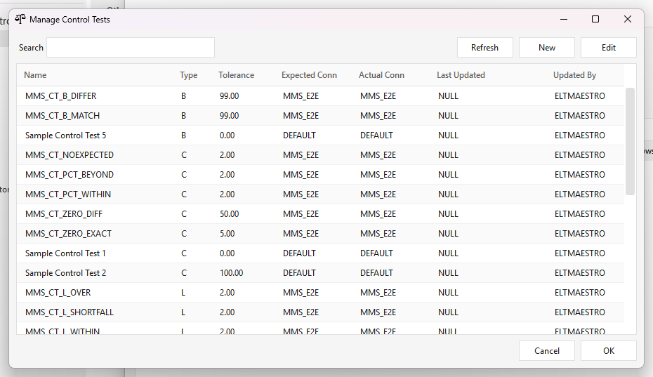
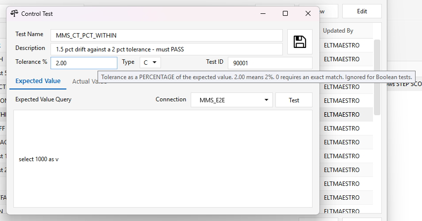

Control tests¶
Control tests are ELTMaestro's data-quality checks: each compares an expected value against an actual value and records a pass/fail and a colour, which the client draws as a tree. This page is the reference for the type codes, how a comparison is actually evaluated, how parent nodes get their colour, and the three SQL patches that carry the recent fixes.
Status. Everything on this page is in server patch
e45c8bfc5(5 September 2026), published to the release bucket and sent to MMS. It is not yet in a numbered server image; a fresh install frominitdb.sqlcarries all of it. See Delivery.
The type codes are two different things¶
control_test.control_test_type_cd mixes measured tests with hierarchy nodes, which is the single
most confusing thing about this feature.
| Code | Meaning | Measured? |
|---|---|---|
B |
Boolean — exact match, tolerance ignored entirely | yes |
C |
Count / equality, either direction | yes |
I |
Same rule as C |
yes |
L |
Lower bound — signed, so a shortfall passes however large | yes |
U |
Upper bound — signed | yes |
P |
Parent node in control_test_hierarchy (a mart, fact or dimension) |
no |
S |
System root node | no |
M |
Offered by the client's dropdown, has no comparison rule | no |

P and S are not unsupported comparison types — they are the tree. Their colour is computed from
their children by rollup_controls2, they carry no tolerance, and they are never
evaluated against one. On dev1 the eight P rows are Sales Fact, Customer Dimension,
Contact Reason Dimension and so on, under a single S row, DATA WAREHOUSE SYSTEM.
Handing a value to a P or S node is a mistake, and since d3a6553c4 it is named as one rather
than reported as a missing test.
Tolerance is a PERCENTAGE¶
Changed in 450b3a435 — shipped in server patch e45c8bfc5 (5 September 2026); not yet in a numbered server image, and there it is GATED behind apply-tolerance.sh. This reinterprets every stored tolerance.
Tolerance used to be an absolute difference in whatever units the test measured. It is now a
percentage of the expected value: 2.00 means 2 %, 0.02 means two hundredths of one percent.
(That also settles the question MMS asked on 30 July — 2 % is written 2.00.)
The editor says so where the value is typed — the field is labelled Tolerance % and its tooltip reads "Tolerance as a PERCENTAGE of the expected value. 2.00 means 2%. 0 requires an exact match. Ignored for Boolean tests.":

One function decides every comparison:
diff = actual - expected
B -> diff = 0 (tolerance ignored)
expected = 0 -> diff = 0 (a percentage of zero is undefined)
otherwise pct = diff * 100 / |expected|
C, I -> ABS(pct) <= tolerance
L -> pct < tolerance (signed, deliberately)
U -> pct > tolerance (signed, deliberately)
anything else -> named exception
It replaced the same comparison inlined in four separate functions. The one the engine calls is
set_actual_test_value_by_test_nm (PG.java:677) — worth stating because an audit that scans only
part of initdb.sql finds three of the four and misses exactly that one.
Do not apply this to a client without measuring first¶
⚠️ A test carrying 100, meaning "100 rows may differ", becomes "100 % may differ" and passes almost
anything — a control test that has stopped controlling. One carrying 0.02 becomes far stricter than
intended. Neither announces itself; the tests keep running and keep reporting a colour.
The conversion is pct = absolute * 100 / expected, which is not usable by hand because expected
is not a property of the test — it is measured afresh on every run. Run the assessment instead:
Read-only, creates nothing, safe on production. It replays that installation's own
control_test_run history under both rules and reports, per test, how many stored results would have
come out differently — separating flips_to_pass (a check that stops catching things) from
flips_to_fail (noisy but visible) — which tests cannot be converted at all and why, and a
suggested UPDATE for each one that can, using the median expected so one unusual run cannot set the
tolerance for everything.
Its section 0 refuses to give advice on an installation that is already patched: tolerances there
are already percentages and converting again would divide them a second time, turning 2 % into 0.2 %.
control_test_passes() exists only after the patch, so its presence is the tell.
Convert the tolerances first, then apply the patch. The other order leaves the tests misinterpreted for the length of that window.
Not evaluated is not the same as failed¶
1b207c554 — shipped in server patch e45c8bfc5 (5 September 2026); not yet in a numbered server image. get_control_test_status_by_nm folded "no verdict yet" into the
failure count, so a test that had not run looked like a test that had failed. It now counts three
states, and the same treatment is applied to parent nodes by the rollup.
Failures are no longer swallowed¶
237078346 — shipped in server patch e45c8bfc5 (5 September 2026); not yet in a numbered server image. set_actual_test_value_by_test_nm used to RETURN(-1) when the
evaluation raised — and no caller checked the return code, so a control test that could not be
evaluated was indistinguishable from one that passed. It now re-raises with a named message, and the
engine checks the return code.
The rollup¶
rollup_controls2() computes the colour of every P and S node from its children. The
meta-service calls it on a timer (PG.rollup_abc, CONFIG_ABC_ROLLUP_SECONDS); nothing else calls it.
| Condition | Colour | test_passed_ind |
|---|---|---|
| any declared child has no verdict yet | NULL |
NULL |
| every child green | G |
TRUE |
| every child red | R |
FALSE |
| all present but mixed | Y |
FALSE |
Eight defects fixed in 37e681159 — shipped in server patch e45c8bfc5 (5 September 2026); not yet in a numbered server image. Two of them made the tree report a healthy
parent over unhealthy or absent children:
- False green over children that never ran. The
batch_run_numpredicate sat in theWHEREclause of aLEFT OUTER JOIN, which silently demotes it to an inner join, so a child with no result row left the aggregate entirely instead of counting as "not ready". Measured: a parent with five declared children, four never run and one green, computed GREEN. - Counts multiplied by the parent's own history. A second join contributed nothing to the SELECT
list but multiplied every row by the number of run rows the parent already had. Measured: two
green children reported as
6after three prior runs — and that inflated figure was written into the parent'sexpected_value/actual_value, so the number on the dashboard grew with every rollup.
Plus: "not yet run" recorded as "failed"; open jobs cancelled based on the open batch count
(a copy-paste typo, and on the fresh-batch path that variable is never assigned, making the test
NULL); a fixed ten-pass loop with no exit, now a fixpoint that warns if its cap is reached; a
failure reported only as a NOTICE — below the default log_min_messages, so the reason a rollup was
cancelled reached no log at all — now a WARNING plus a durable make_error_message row;
l_runs_today counting every batch run in the installation and never being read; and debug output
hardcoded on.
The same open-jobs typo exists in measure_abc_spaceused and measure_batch_runs_per_week. Both are
dead — nothing in the tree calls either — so they are corrected in initdb.sql but deliberately left
out of the migration.
Lookup and error paths¶
d3a6553c4 — shipped in server patch e45c8bfc5 (5 September 2026); not yet in a numbered server image. make_control_test_run_by_id / _by_nm looked the test up with
control_test_type_cd IN ('C','L','U','B'), which conflated two different problems:
- a test of type
I— implemented bycontrol_test_passesbut excluded here — found no row; - a
P/Snode was reported as "could not find the control_test", which is false: the row is plainly in the table.
Both then landed on a RAISE EXCEPTION that interpolated p_test_nm, which is not a parameter of
make_control_test_run_by_id. PL/pgSQL resolves identifiers lazily, so the function created
cleanly and only died when the error path ran, with column "p_test_nm" does not exist instead of
the diagnostic the operator needed.
The filter is gone from the lookup and the type is checked immediately after the fetch, where it can
be named. That also closed a silent path: with no check at all, a call carrying a NULL expected or
actual skips the comparison entirely and inserts a run row for a rollup node without complaint,
because control_test_passes — the only thing that would have objected — is reached only when both
values are present.
make_control_test_run_by_num does no comparison despite the name; it only inserts the run row, so it
has no tolerance or type concern.
Known-broken, deliberately untouched¶
set_control_test_run_results has zero callers and is broken independently of any of this:
SELECT … INTO three variables from two columns with no WHERE clause, so it reads an arbitrary
control_test row, and its L/U branches ignore tolerance entirely. Fixing dead code adds risk
without benefit — but it is a trap for anyone who wires it up later.
Delivery¶
initdb.sql runs only on a fresh install, so these files are the route onto an existing system.
All are idempotent, change no table and no data, and need no restart — the engine and meta-service
call these functions by name.
| File | What it carries |
|---|---|
control-test-tolerance-assessment.sql |
Read-only. The pre-flight above. Run it first. |
control-test-tolerance-pct.sql |
control_test_passes() + all four callers repointed; the lookup and type-check fixes |
control-test-rollup-fix.sql |
rollup_controls2() |
psql -h <host> -U <user> -d sqlmaestro -f control-test-tolerance-assessment.sql # read-only, first
# ... review, convert tolerances ...
psql -h <host> -U <user> -d sqlmaestro -f control-test-tolerance-pct.sql
psql -h <host> -U <user> -d sqlmaestro -f control-test-rollup-fix.sql
Verifying¶
-- the comparison function exists and behaves
SELECT control_test_passes('C',1000,1010,2) AS within, -- t
control_test_passes('C',1000,1050,2) AS beyond; -- f
-- an unhandled type is named, not silently passed
SELECT control_test_passes('P',100,100,0); -- raises
For the rollup, the honest test is a parent whose children are only partly evaluated: it must come
back NULL, not green, and its expected_value must equal the number of declared children.
Code map¶
| Concern | Where |
|---|---|
| Engine step | engine/steps/common/global/ControlTest.java |
| Engine calls | share/PG.java — set_actual_test_value_by_test_nm, get_control_test_status_by_nm |
| Rollup trigger | root-engine-service PG.rollup_abc (timer) |
| Client editor | GeneralWindow/ControlTestEditorWindow.xaml.cs, ControlTestManager.xaml.cs |
| Comparison | control_test_passes() in initdb.sql |
See also¶
- DATA-MODEL.md —
control_test,control_test_run,control_test_hierarchy - VARIABLES.md — the run-history variables these tests are usually measured against
- OPERATIONS.md — applying SQL patches to a running installation